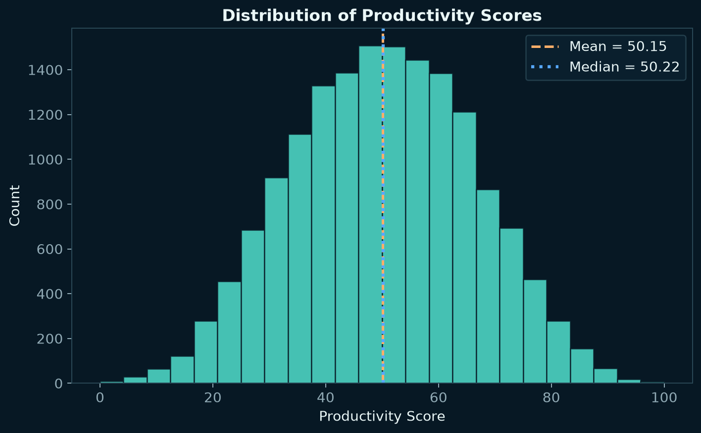
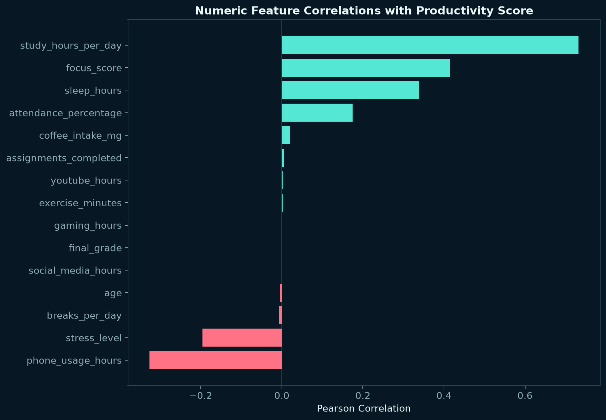
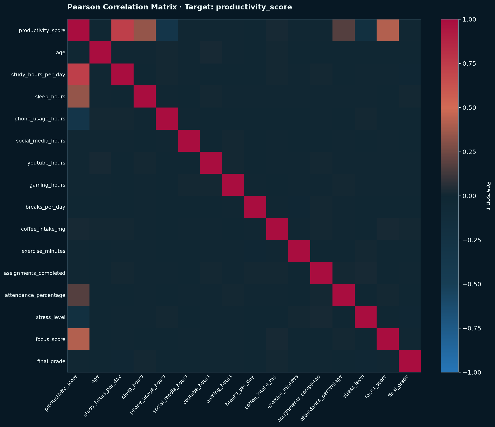
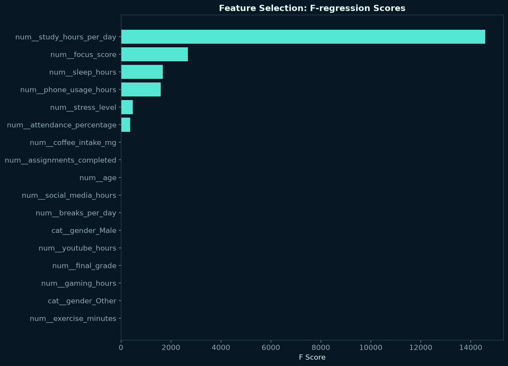
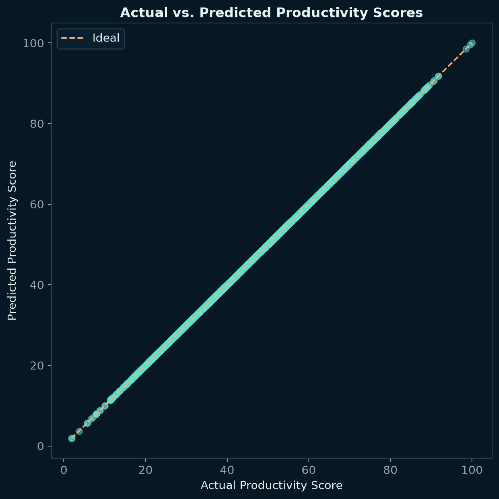
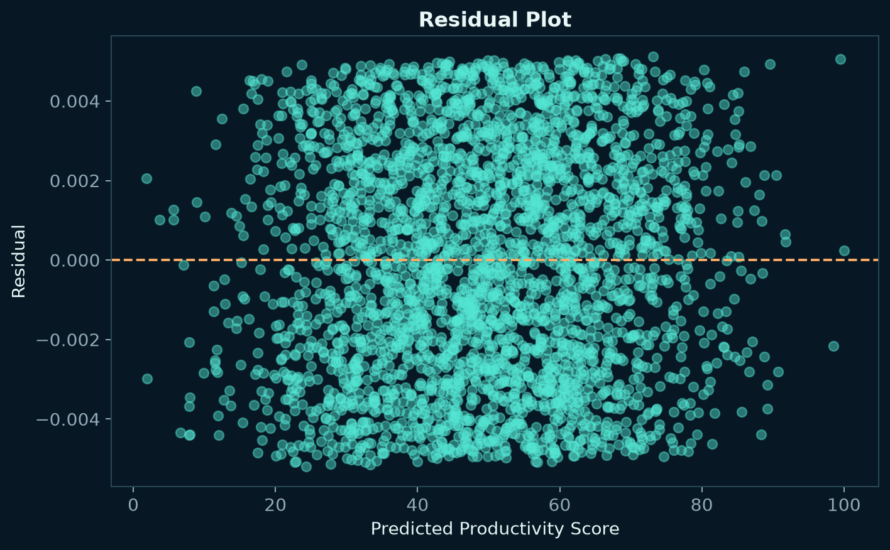
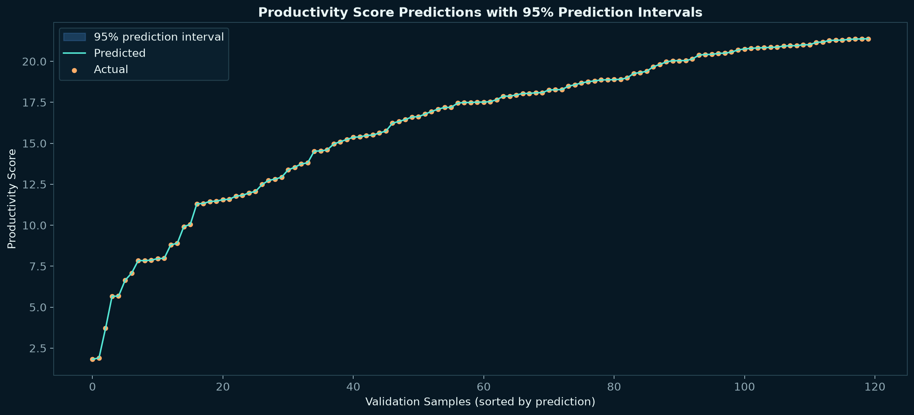

01Baseline
Dummy Baseline
所有學生都預測為訓練集平均值，用來判斷模型是否真正提供預測價值。
- RMSE
- 16.2398
- R²
- −0.0034
AIoT × CRISP-DM × Regression
使用 16,000 筆 competition train.csv 資料預測官方 productivity_score。完整執行資料理解、特徵選擇、多元線性回歸、交叉驗證與預測區間。
Selected Linear
1.000 R²Model overview
所有模型使用相同 80/20 切分。Selected Linear 的 R² 幾乎為 1，表示目標高度接近可被特徵重建的線性公式。
所有學生都預測為訓練集平均值，用來判斷模型是否真正提供預測價值。
使用 One-Hot 後全部 17 個候選特徵，幾乎完整重建 productivity_score。
SelectKBest 保留 12 個特徵，維持近乎完美表現並完成 Feature Selection。
Selected Linear 的 CV R² 幾乎為 1。五個資料切分都得到一致結果，顯示關係穩定且高度線性。
Data understanding
以下圖表由 16,000 筆 train.csv 重新計算。Pearson r 衡量線性關係，不代表因果，但可協助辨識適合線性回歸的訊號。
平均數 50.15、中位數 50.22，偏度約 −0.018。目標近似對稱，沒有明顯長尾問題。

下載高解析 PNG ↓study_hours_per_day 達 0.7323；focus、sleep 為正向訊號，phone usage 與 stress 為負向訊號。

下載高解析 PNG ↓第一列與第一欄就是 Target：productivity_score。紅色代表正相關、藍色代表負相關；六個主要訊號清楚可見，predictors 彼此的最高 |r| 約 0.020。

Target correlation ranking
前六項呈現明確線性訊號，方向也符合資料中的生成關係；其餘欄位接近零。
| 特徵 | Pearson r | 判讀 |
|---|---|---|
| study_hours_per_day | +0.7323 | 強正相關 |
| focus_score | +0.4151 | 中度正相關 |
| sleep_hours | +0.3386 | 中度正相關 |
| phone_usage_hours | −0.3269 | 中度負相關 |
| stress_level | −0.1956 | 弱負相關 |
| attendance_percentage | +0.1748 | 弱正相關 |
| coffee_intake_mg | +0.0196 | 近乎無相關 |
| breaks_per_day | −0.0070 | 近乎無相關 |
這三個欄位與目標呈正相關，其中讀書時數的單變量線性關係最強。
兩者和 productivity_score 呈負相關；方向是預測關係，不應直接解讀為因果。
R² 幾乎為 1，顯示目標高度接近線性生成公式；外部真實資料仍可能有較大誤差。
Bring your own data
預設仍顯示本站 StudentsPerformance_train.csv 的研究成果。只有按下「開始回歸分析」後，下方才會產生你自己的 holdout 評估與診斷。
第一列需為欄位名稱。上傳後可以選擇 Target 與要投入模型的 Features。
Feature selection
15 個數值欄位加上 gender 的 2 個 dummy variables。SelectKBest 明確找出六個核心特徵。

F-score 約 14,585，遠高於其餘欄位，是 productivity_score 最主要的單變量線性訊號。
id 與 student_id 僅用於辨識資料列，不進入模型，避免流水號造成假訊號。
讀書、專注、睡眠、手機、壓力與出席率加入後，R² 已接近 1。
Model playground
255 組結果全部由目前 train.csv 實際訓練。切換方法、k 與回歸器，比較特徵組合對預測表現的影響。
Model diagnostics
診斷圖顯示模型穩定追蹤 productivity_score，殘差與預測區間都非常小。

資料點幾乎落在 45 度線上，表示預測值緊貼實際 productivity_score。

殘差集中在零附近，沒有明顯隨預測值改變的系統性型態。

Split-conformal 半寬約 0.0047 分，覆蓋率接近設定的 95%。
Live predictor
試算器套用模型實驗室目前的設定。調整主要特徵即可觀察 productivity_score 的線性變化。
CRISP-DM workflow
從官方 train.csv 定義任務、準備資料、選擇特徵，到交叉驗證與部署，所有結果皆可重新執行。
預測官方 productivity_score 連續值，以 RMSE 為主要指標。
檢查 16,000 筆、19 欄、缺失、重複、分布與相關性。
排除兩個 ID；數值補值與標準化；gender 做 One-Hot。
比較 Dummy、完整與特徵選擇 Linear、Ridge、Lasso。
使用 MAE、RMSE、R²、五折驗證、殘差與預測區間。
輸出完整 Pipeline、欄位 Schema、分析檔與互動網站。
Dataset & scope
本機檔案共有 16,000 筆、19 欄。本作業排除 id、student_id，以其餘 16 個欄位預測官方目標 productivity_score。